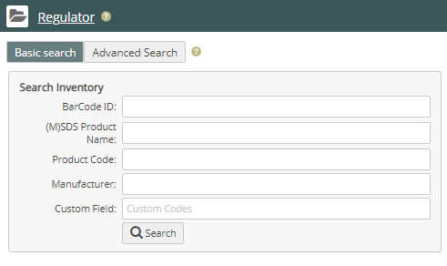
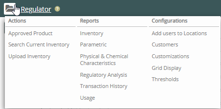

) to see the Regulator navigation pane.
) to see the Regulator navigation pane.Regulator is an online substance inventory tracking and regulatory reporting system. Regulator manages the real-time chemical inventory tracking of any substance used across one or many locations in an enterprise.
Use the Product Menu button ( ) to switch to the Regulator dashboard. The Regulator Search page is displayed by default. You can begin searching immediately using the Quick Search or click Advanced Search for a more extensive search. For more about searching, see Searching Current Inventory.
On the Regulator dashboard, you can search for product inventory or perform other tasks.

Click the help icons ( ) to see additional "show me" help.
Regulator Navigation Pane
Click the Regulator Main Menu icon ( ) to see the Regulator navigation pane.

From the Regulator dashboard, you can also navigate to the following features:
Actions—Search for and add inventory, or upload inventory from a spreadsheet.
Configurations—Customize the Regulator experience, add inventory thresholds, assign users to locations, and add customer information that can be associated with product inventory.
Reports—Generate reports to view your inventory and its use and history, and analyze your inventory against parametric data and regulatory lists.